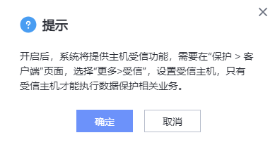

主机受信功能用于提升系统安全性。开启主机受信功能并设置受信主机后，可以防止白名单外的主机（未受信主机）冒用ProtectAgent证书攻击系统。
操作步骤
- 选择“系统 > 安全 > 受信”。
- 在“受信设置”页面单击“修改”。
- 打开“主机受信”开关，单击“保存”。
- 系统弹出如下提示。您需要在页面，选择，设置受信主机，只有受信主机才能执行数据保护相关业务。

- 确认提示信息后，单击“确定”。

您也可以关闭主机受信功能，关闭主机受信功能后，系统不再对主机提供白名单校验，可能存在安全风险，建议开启。